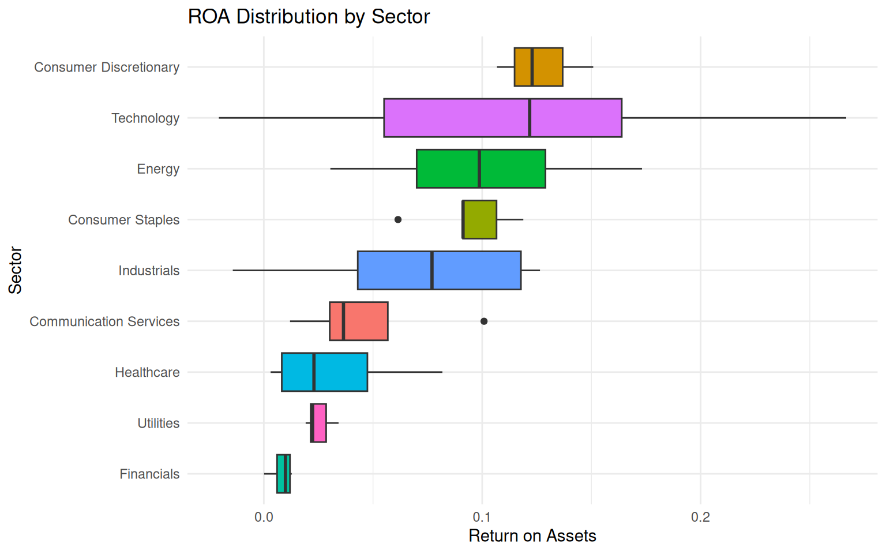
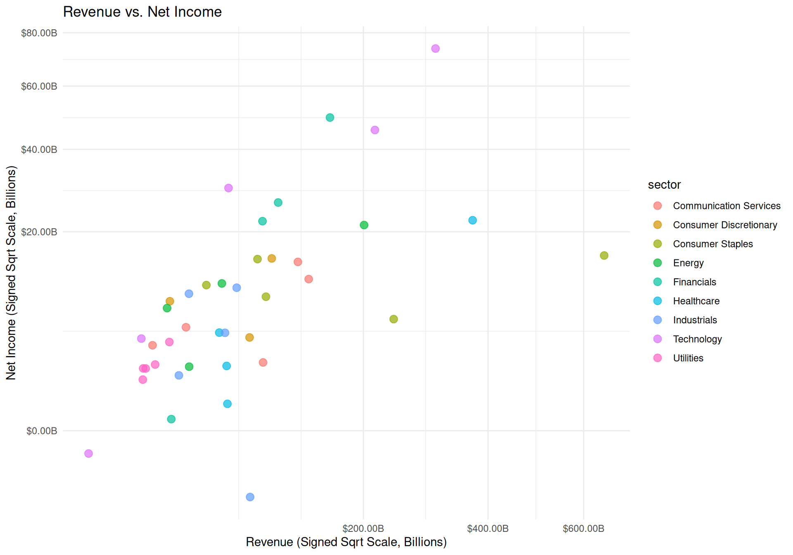

The primary dataset comes from the U.S. Securities and Exchange Commission (SEC) EDGAR system, using the CompanyFacts API. This API provides standardized XBRL financial statement data for publicly traded companies without requiring an API key. 40 large companies were selected across eight sectors to ensure diversity.
Other data sources (macroeconomic indicators, market data, news sentiment) will be added in subsequent steps.
Data Collection & API
This dataset provides the fundamental measures of performance (e.g., profitability, leverage, liquidity). Python was used to connect with the SEC API. The script performs the following steps:
Fetch the official company ticker → CIK mapping from company_tickers.json.
Select a list of tickers (40 companies).
For each company, call the CompanyFacts endpoint: https://data.sec.gov/api/xbrl/companyfacts/CIK{cik}.json
Extract key US-GAAP financial metrics from the latest 10-K filing.
fin %>%ggplot(aes(x =reorder(sector, ROA, FUN = median), y = ROA, fill = sector)) +geom_boxplot() +coord_flip() +labs(x ="Sector", y ="Return on Assets", title ="ROA Distribution by Sector") +theme_minimal() +theme(legend.position ="none")

Return on Assets by Sector
Revenue vs. Net Income
Code
signed_sqrt <-trans_new("signed_sqrt",transform =function(x) sign(x) *sqrt(abs(x)),inverse =function(x) sign(x) * x^2,domain =c(-Inf, Inf))fin %>%ggplot(aes(x = Revenue, y = NetIncome, color = sector)) +geom_point(size =3, alpha =0.7, position =position_jitter(width =0.02, height =0.02)) +scale_x_continuous(trans = signed_sqrt, labels =dollar_format(scale =1e-9, suffix ="B")) +scale_y_continuous(trans = signed_sqrt, labels =dollar_format(scale =1e-9, suffix ="B")) +labs(x ="Revenue (Signed Sqrt Scale, Billions)", y ="Net Income (Signed Sqrt Scale, Billions)", title ="Revenue vs. Net Income") +theme_minimal()

Revenue vs Net Income (signed square root scale)
Initial Findings
The dataset contains 40 companies across 8 sectors.
Missing values were imputed using sector medians, so all financial variables are now complete.
ROA varies widely by sector; technology and healthcare often show higher ROA, while utilities and energy have lower ROA.
There is a positive relationship between revenue and net income, as expected, but the spread suggests other factors (e.g., margins, industry) also matter.
These initial observations set the stage for integrating additional data sources and building predictive models in later modules.
Source Code
---title: "Data Preparation and Exploratory Data Analysis"---# Data SourcesThe primary dataset comes from the **U.S. Securities and Exchange Commission (SEC) EDGAR** system, using the **CompanyFacts API**. This API provides standardized XBRL financial statement data for publicly traded companies without requiring an API key. 40 large companies were selected across eight sectors to ensure diversity.Other data sources (macroeconomic indicators, market data, news sentiment) will be added in subsequent steps.# Data Collection & APIThis dataset provides the fundamental measures of performance (e.g., profitability, leverage, liquidity). Python was used to connect with the SEC API. The script performs the following steps:1. Fetch the official company ticker → CIK mapping from `company_tickers.json`.2. Select a list of tickers (40 companies).3. For each company, call the CompanyFacts endpoint: `https://data.sec.gov/api/xbrl/companyfacts/CIK{cik}.json`4. Extract key US-GAAP financial metrics from the latest 10-K filing.5. Compute derived ratios (ROA, ROE, debt-to-equity, profit margin).6. Save raw and clean CSV files.**API endpoint example:** `https://data.sec.gov/api/xbrl/companyfacts/CIK0000320193.json`(where `0000320193` is the CIK for Apple Inc.)**See the full Python code:** [`code/company_financials.py`](code/company_financials.py)# Raw DataThe raw data, exactly as returned by the SEC API, is stored in:- [`company_financials_raw.csv`](data/raw/company_financials_raw.csv)This file contains one row per company (latest fiscal year) with some missing financial values and information as shown in the preview below. ## Raw Data Preview# Data PreparationCleaning and transformation steps performed in Python:- Converted numeric columns to float.- **Imputed missing values** in financial columns using the **sector median** (with global median as fallback).- Computed derived metrics: - **ROA** = Net Income / Total Assets - **ROE** = Net Income / Total Equity - **Debt-to-Equity** = Long-Term Debt / Total Equity - **Profit Margin** = Net Income / Revenue- Added a sector column based on ticker (manual mapping).The clean dataset is stored in:- [`company_financials_clean.csv`](data/clean/company_financials_clean.csv)A preview is shown below## Clean Data Preview# Exploratory Data Analysis```{r}#| label: setup-eda#| echo: false#| message: false#| warning: falselibrary(readr)library(dplyr)library(ggplot2)library(scales)fin <-read_csv("data/clean/company_financials_clean.csv", show_col_types =FALSE)```## Summary statistics## Distribution of ROA by sector```{r}#| label: roa-by-sector#| fig-cap: "Return on Assets by Sector"#| fig-width: 8#| fig-height: 5fin %>%ggplot(aes(x =reorder(sector, ROA, FUN = median), y = ROA, fill = sector)) +geom_boxplot() +coord_flip() +labs(x ="Sector", y ="Return on Assets", title ="ROA Distribution by Sector") +theme_minimal() +theme(legend.position ="none")```## Revenue vs. Net Income```{r}#| label: rev-vs-netincome#| fig-cap: "Revenue vs Net Income (signed square root scale)"#| fig-width: 10#| fig-height: 7signed_sqrt <-trans_new("signed_sqrt",transform =function(x) sign(x) *sqrt(abs(x)),inverse =function(x) sign(x) * x^2,domain =c(-Inf, Inf))fin %>%ggplot(aes(x = Revenue, y = NetIncome, color = sector)) +geom_point(size =3, alpha =0.7, position =position_jitter(width =0.02, height =0.02)) +scale_x_continuous(trans = signed_sqrt, labels =dollar_format(scale =1e-9, suffix ="B")) +scale_y_continuous(trans = signed_sqrt, labels =dollar_format(scale =1e-9, suffix ="B")) +labs(x ="Revenue (Signed Sqrt Scale, Billions)", y ="Net Income (Signed Sqrt Scale, Billions)", title ="Revenue vs. Net Income") +theme_minimal()```# Initial Findings- The dataset contains **40 companies** across **8 sectors**.- Missing values were imputed using sector medians, so all financial variables are now complete.- ROA varies widely by sector; technology and healthcare often show higher ROA, while utilities and energy have lower ROA.- There is a positive relationship between revenue and net income, as expected, but the spread suggests other factors (e.g., margins, industry) also matter.- These initial observations set the stage for integrating additional data sources and building predictive models in later modules.